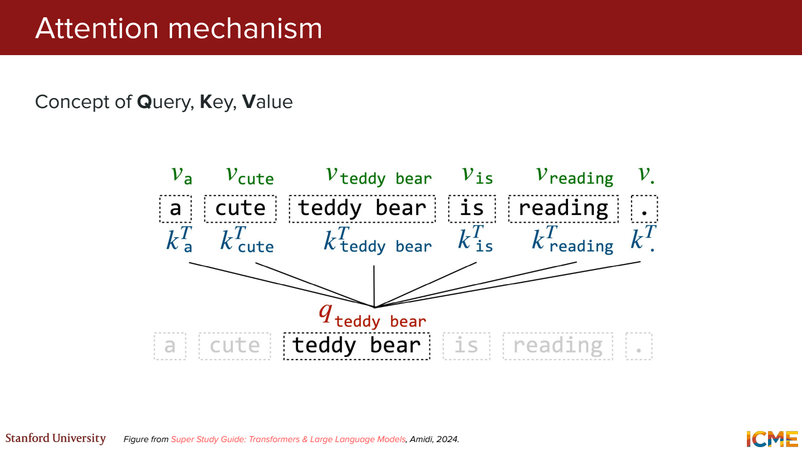
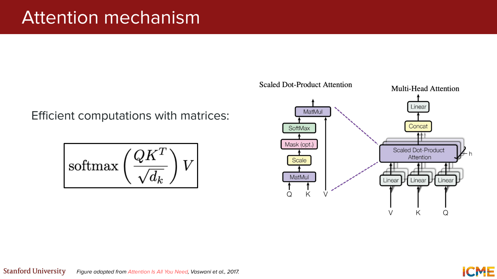

이 노트의 목차
Attention에서 Q K V가 하는 일
Attention은 Query, Key, Value를 가지고 계산. 여기서는 Transformer의 scaled dot-product attention 기준.
- Q와 K → 어디를 얼마나 참고할지 계산
- V → 그 비율만큼 가져와서 섞을 정보
문장 하나로 보면
민수는 사과를 먹었다
설명을 위해 민수는 / 사과를 / 먹었다를 각각 한 토큰으로 가정.
실제 토크나이저에서는 더 잘게 나뉠 수 있음.
지금은 먹었다 위치에서 다른 토큰을 참고하는 상황.
“무엇을 먹었는지 찾는다”는 비유로 생각해보기.
| 구분 | 역할 | 문장에서 생각해볼 예시 |
|---|---|---|
| Query | 현재 위치에서 찾는 정보 | 먹었다 쪽에서 “무엇을 먹었지?” |
| Key | Query와 비교할 특징 | 사과를 쪽에서 비교에 사용할 특징 |
| Value | 실제로 가져올 정보 | 사과를 쪽에서 출력에 보탤 정보 |
Q가 실제로 한국어 질문을 담고 있는 건 아님. Q, K, V 모두 숫자 벡터. ‘음식’, ‘사람’ 같은 이름을 각 차원에 미리 붙여두는 것도 아님.
그리고 먹었다만 Q를 갖는 건 아님.
Self-attention에서는 민수는, 사과를, 먹었다 각각에서 Q, K, V를 만듦.
지금은 그중 먹었다의 Q 하나만 꺼내 보는 것.

숫자를 넣어보면
작게 2차원 벡터로 계산. 아래 숫자는 설명용으로 정한 값. 학습된 모델에서 뽑은 값은 아님.
q_먹었다 = [1, 0]
| 참고할 토큰 | K | V | q와 K의 내적 |
|---|---|---|---|
| 민수는 | [0, 1] | [1, 0] | 0 |
| 사과를 | [2, 0] | [0, 2] | 2 |
| 먹었다 | [1, 1] | [1, 1] | 1 |
예를 들어 사과를의 점수는 1 × 2 + 0 × 0 = 2.
이 설정에서는 사과를 쪽 점수가 가장 큼.
그다음 Q와 K의 차원 수인 d_k = 2를 사용.
내적 점수 [0, 2, 1]
sqrt(2)로 나눈 점수 [0, 1.4142, 0.7071]
softmax 가중치 [0.1400, 0.5760, 0.2840]
Softmax는 각 점수에 exp를 적용한 뒤 전체 합으로 나누는 계산.
예를 들어 사과를의 가중치는 아래처럼 나옴.
exp(1.4142) / (exp(0) + exp(1.4142) + exp(0.7071)) ≈ 0.5760
가중치 합은 1. 이제 이 비율로 V를 섞음.

출력 ≈ 0.1400 × [1, 0]
+ 0.5760 × [0, 2]
+ 0.2840 × [1, 1]
= [0.4240, 1.4360]
사과를만 골라서 가져오는 게 아니라, 세 V를 서로 다른 비율로 섞은 결과.
이 벡터가 먹었다 위치의 attention 출력.
아직 다음 단어의 확률은 아님.
여기까지를 여러 Q에 대해 한 번에 쓰면 아래 식.
각 Q에 대해 K들을 비교하고, 행마다 softmax를 적용. 계산 순서는 Attention Is All You Need의 3.2.1절 참고.
왜 sqrt(d_k)로 나눌까?
Q와 K의 성분이 서로 독립이고 각각 평균 0, 분산 1이라고 놓으면 내적의 분산은 d_k.
표준편차가 sqrt(d_k)이므로 그만큼 나눠 점수의 크기를 조절.
점수가 너무 커져 softmax가 한쪽으로 몰리는 것을 줄이려는 것.
그럼 K와 V는 왜 따로 두는지
검색할 때 책 제목을 보고 고르지만, 실제로 읽는 건 책 내용. 비교에 쓰는 특징과 가져오는 내용을 따로 만들 수 있게 한 구조로 이해.
위 예시에서 사과를의 K는 [2, 0], V는 [0, 2].
점수 계산에는 앞의 값, 마지막 가중합에는 뒤의 값을 사용.
그럼 Q와 K는 그대로 두고 V만 바꾸면?
→ 가중치는 그대로. 출력에 섞이는 내용만 달라짐.
예를 들어 사과를의 V만 [0, 4]로 바꾸면 출력은 약 [0.4240, 2.5879].
사과를의 가중치 0.5760은 그대로인데 두 번째 출력값이 커짐.
반대로 K만 바꾸면?
사과를의 K를 [2, 0]에서 [0, 2]로 바꾸면 q와의 내적이 2에서 0으로 바뀜.
사과를의 가중치는 약 0.576에서 0.248로 줄어듦. V는 그대로인데 출력은 약 [0.752, 1.000].
이번에는 참고하는 비율이 바뀌어서 출력이 달라진 것.
같은 입력인데 Q와 K가 달라지는 이유
Self-attention에서는 같은 입력 X에 서로 다른 변환 행렬을 곱함.
Q = XW_Q
K = XW_K
V = XW_V
X는 이 attention 층으로 들어오는 토큰 벡터들을 모은 것.
W_Q, W_K, W_V는 학습되는 행렬.
같은 사과를 벡터라도 어떤 행렬을 곱하느냐에 따라 결과가 달라짐.
관련 구조는 논문 3.2.2–3.2.3절 참고.
예를 들어 [1, 2]에 단위행렬을 곱하면 [1, 2] 그대로.
두 성분을 바꾸는 행렬을 곱하면 [2, 1].
실제 학습되는 행렬은 훨씬 복잡하지만, 같은 입력이 다른 벡터로 바뀐다는 점은 같음.
‘Self’는 자기 자신 한 토큰만 본다는 뜻이 아니라, Q와 K, V의 출발점이 같은 시퀀스라는 뜻.
위 예시에서도 먹었다가 자기 자신뿐 아니라 앞의 두 토큰을 참고함.
그럼 다음 토큰을 예측할 때도 민수는 위치가 뒤의 사과를을 봐도 될까?
민수는 다음에 올 사과를을 맞히는 상황이라면 정답을 미리 보는 셈.
그래서 현재 위치보다 뒤쪽 점수를 가리는 causal mask가 필요.
1단원의 masking 부분과 연결됨.